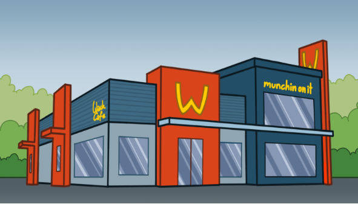
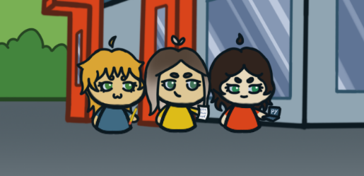

Główna
W grze FastFall wcielamy się w głównego bohatera Ronalda, którego głównym celem jest zbliżyć się do poznanej w pracy dziewczyny. Gra oferuje wiele różnych wyborów co pozwala odbiorcy na tworzenie własnej historii. Każdy wybór gracza ma wpływ na dalszy przebieg fabuły i jej zakończenie.
Fast Fall to krótka gra typu Visual Novel, która na pierwszy rzut oka wydaję się standardową grą typu “romans”, jednak z nietypowym twistem. Tytuł odnosi się do lokalizacji akcji – restauracji fast food WackDonald’s - oraz romantycznej tematyki gry z określenia “to fall in love
Wygląd restauracji oraz jej logo inspirowany był siecią restauracji McDonald’s. Na etapie planowania scenariusza zależało nam na motywie, który wyróżniałby naszą grę od innych z kategorii romansów. Postawiłyśmy na lokalizację, która wielu będzie wydawała się znajoma, jednak nietypowa pod względem tego rodzaju gier.
Nowości
Najnowsza wersja 1.2.0 jest już dostępna!
- naprawiono 4 wykryte błędy
- dodano nową ścieżkę fabularną
Aktualizacja poprawkowa 1.1.4 gotowa do pobrania!
- naprawiono 7 wykrytych błędów
O nas
Gra FastFall została stworzona dzięki pracy firmy ONA.
Pobierz
Pobierz grę już teraz i zacznij swoją przygodę!
Pobierz grę